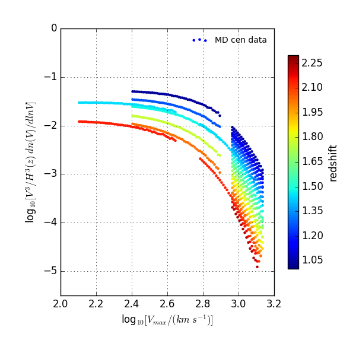
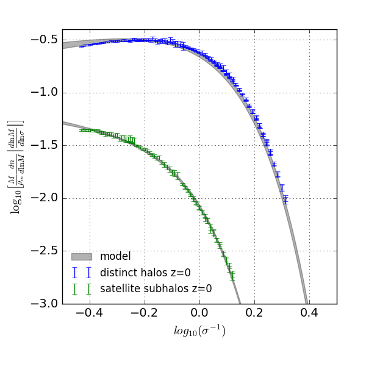

|  |
Concentrations of low mass halos |
|  |
According to the standard LambdaCDM cosmological framework, the mass spectrum of cold dark matter halos spans over many orders of magnitude, from the largest virialized structures observed in the Universe with masses above $10^{15}$ M$_\odot$, extending down to very small masses, probably as small as the Earth's, i.e. $10^{-6}$ M$_\odot$, or even less. Halos below $10^7$ M$_\odot$ are most probably not able to host stars or gas at all, thus remaining completely dark. Yet, there is a hope to detect them via gravitational lensing, dark matter particle decay or annihilation, or distortions in stellar velocity distribution. Low-mass halos may also have an important impact on future observations of reionization process. Lomonosov project is aimed at measuring concentration parameter, which characterizes the density inside dark matter halos, for the halos in the mass range $10^7 - 10^{10}$ M$_\odot$, hardly accessible by typical large scale simulations. The Lomonosov suite consists of four dark matter simulations run at the Lomonosov supercomputer of the Moscow State University computer center (http://parallel.ru). One simulation is a full box and three other are zoom simulations of overdense, typical and underdense regions. |
| Please click here to access the halo catalogs, merger trees and snapshots. |
|
Acknowledgement
If you use these data, please cite Pilipenko et al. 2017. |
last update, mar. 2017